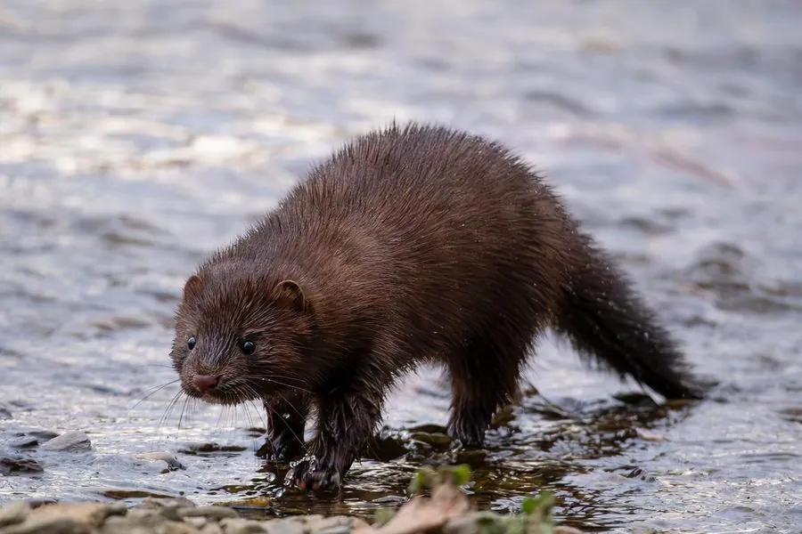

哺乳动物 · 动物界
美洲水貂 Neovison vison

北美洲的半水生鼬科动物，毛色深褐、皮毛防水，善游泳潜水，以鱼类和鼠类为食，被广泛饲养并逃逸到野外。
- 分类
- 门脊索动物门纲哺乳纲目食肉目科鼬科属美洲水貂属
- 栖息环境
- 河流、湖泊、沼泽与海岸附近的林地
- 地理分布
- 原产北美洲，因毛皮养殖被引入欧洲、亚洲等多地
- 保护级别
- IUCN 无危（LC）
物种志
美洲水貂体长 0.3–0.45 米，尾长 0.15–0.25 米，体重 0.5–1.5 kg，雄性大于雌性。它的身体细长，被毛为深褐至黑褐色，腹部有时带白斑；头部扁平，耳朵小，四肢短而有力，趾间有蹼，尾巴粗壮，适合在水中游泳。
美洲水貂原产于北美洲，栖息于河流、湖泊、沼泽和海岸附近的林地。它是半水生猎手，善游泳和潜水，以鱼类、蛙类、甲壳类、鼠类、鸟类和鸟卵为食，多在夜间活动，白天在洞穴中休息。美洲水貂的皮毛防水保暖，是重要的毛皮兽，因此被世界各地大量饲养，逃逸个体在欧洲等地形成入侵种群，对当地水鸟和鱼类造成影响。雌性妊娠期约 40–75 天，每胎 3–6 仔。其北美野生种群总体稳定，被列为无危。
形态与习性
- 食性鱼类、蛙类、甲壳类、鼠类、鸟类与鸟卵
- 体长0.3–0.45 m，尾长 0.15–0.25 m
- 体重0.5–1.5 kg，雄性大于雌性
- 寿命野外约 3–6 年
- 繁殖妊娠期约 40–75 天，每胎 3–6 仔
- 活动节律多在夜间活动
- 本领善游泳潜水，皮毛防水保暖
趣味知识
- 美洲水貂的皮毛防水保暖，因此被大量饲养用于毛皮。
- 逃逸的养殖水貂在欧洲形成入侵种群，影响当地水鸟。
- 它善游泳和潜水，趾间有蹼，尾巴粗壮。
- 水貂多在夜间活动，白天在洞穴中休息。